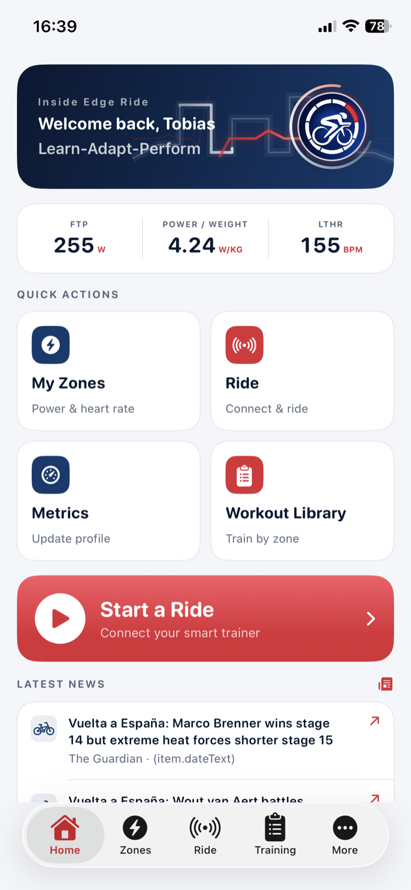

01UnderstandMetrics and zones
02ChoosePurposeful workouts
03ConnectCompatible trainers
04RideLive ERG control
05ReviewSave and share
Inside Edge Ride
What began as a clear way to understand FTP, heart rate, W/kg and training zones has grown into a complete cycling companion for iPhone and iPad.
Learn what your metrics mean, choose a structured workout, connect a compatible smart trainer and ride with live ERG control—without an ongoing training-platform subscription.

Learn — Adapt — Perform
Inside Edge Ride turns raw cycling numbers into practical guidance. Set FTP, body weight and lactate-threshold heart rate once, then see personalised power, W/kg and heart-rate ranges throughout the app.
Workout Ride
Browse workouts by training zone, preview the profile and let ERG mode apply each target using your FTP. Live power, cadence, heart rate, interval timing and the complete session remain visible.

Complete the loop
Review ride time, distance, average and maximum power, heart rate, cadence, relative intensity and estimated load alongside the completed workout graph.

A focused alternative
Inside Edge Ride is not trying to recreate a virtual cycling world. It is a straightforward, cost-effective way to understand training, control structured smart-trainer workouts and keep the results.